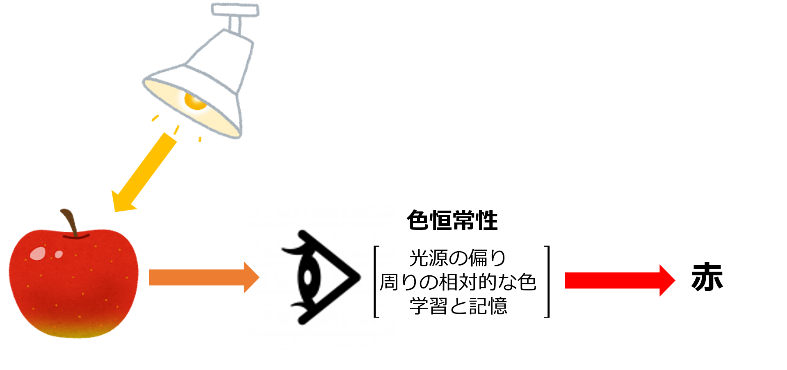
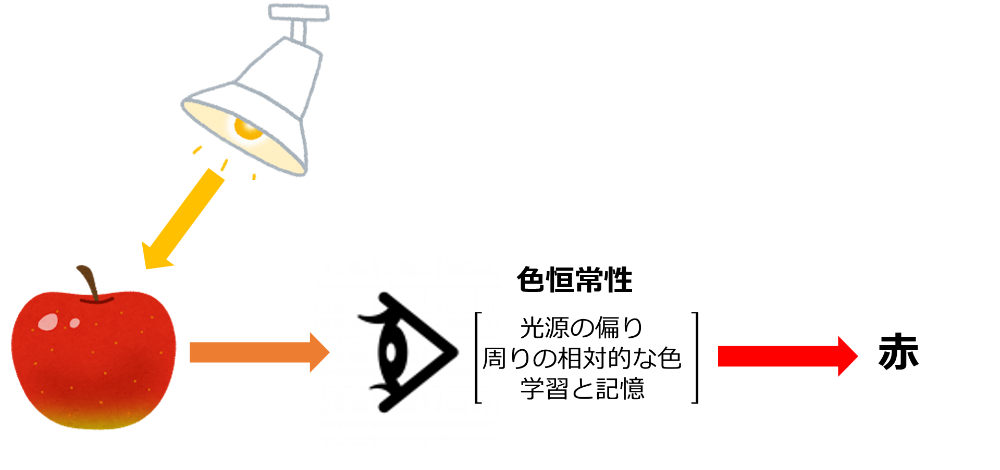
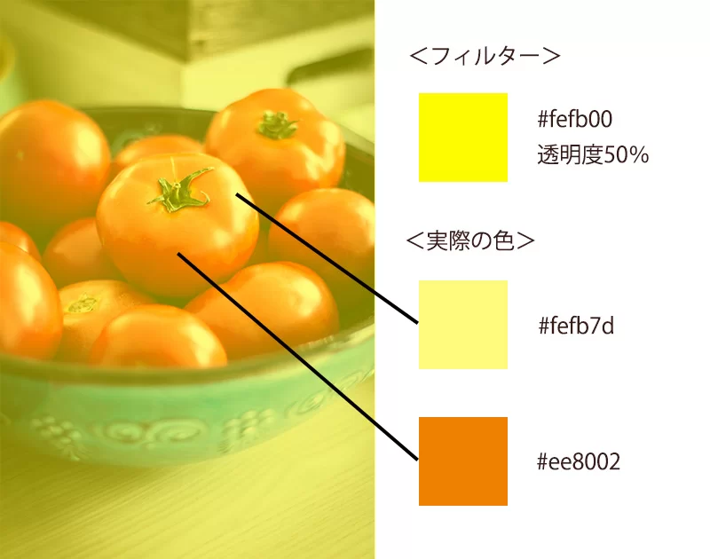

私たちの目は、照明が変わっても物の“本当の色”を見分けられます。
これは、脳が自動的に色を補正してくれているからです。
この性質を「色恒常性」と言います。
照明の影響で狂った画像の色を、AIが自動で補正し、本来の色へと近づけます。
人間が持つ色恒常性の仕組みをAIに再現し、機械が“正しい色”を理解できるようにする研究です。
私たちの目は、照明が変わっても物の“本当の色”を見分けられます。
これは、脳が自動的に色を補正してくれているからです。
この性質を「色恒常性」と言います。
このトマト、熟していると思いますか？
下の画像は、黄色い照明の下で撮影されたトマトです。左側にはその一部の色（RGB値）が表示されています。
この左側の色だけを見て、熟しているかどうかを判断するのはとても難しいですよね。
実際、カメラや機械はこのような「照明の影響を受けた状態」のままで判断していることが多く、誤った判断につながってしまいます。
こうした問題は、色の正確な判断が必要な現場で特に深刻です。
従来のアルゴリズムでは限界がある。
AIを使うことで、より高精度な照明推定が可能になります。
AIなら複雑な状況にも対応できる。
ルールを定めずに、データから柔軟に学習できるのが強みです。
人間の色恒常性と似ている。
文脈や知識から「こう見えるはず」と推論する処理は、AIの得意分野です。
照明の色を推定する。
画像全体から、青みがかっているなどの傾向を検出します。
中立な色（グレイッシュな白）へ変換する。
均等なRGB比の光に変換して補正の準備をします。
画像全体に補正を適用。
照明の影響を全ピクセルに均等に補正して自然な見た目にします。
まとめ：
AIは、画像の光の色を見抜いてその影響を取り除くことで、「本来の色」を再現します。